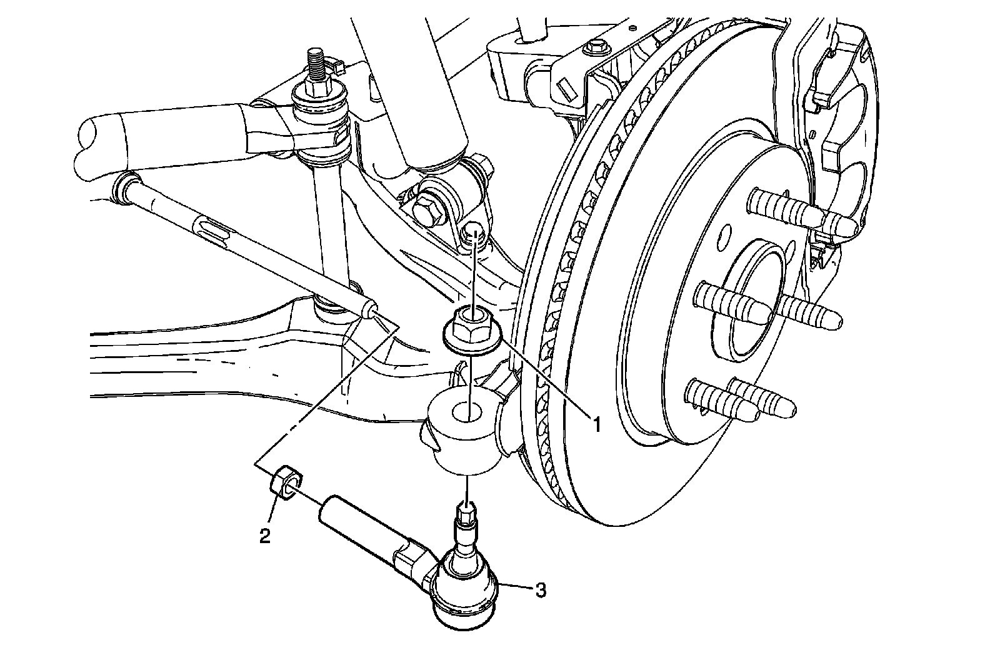
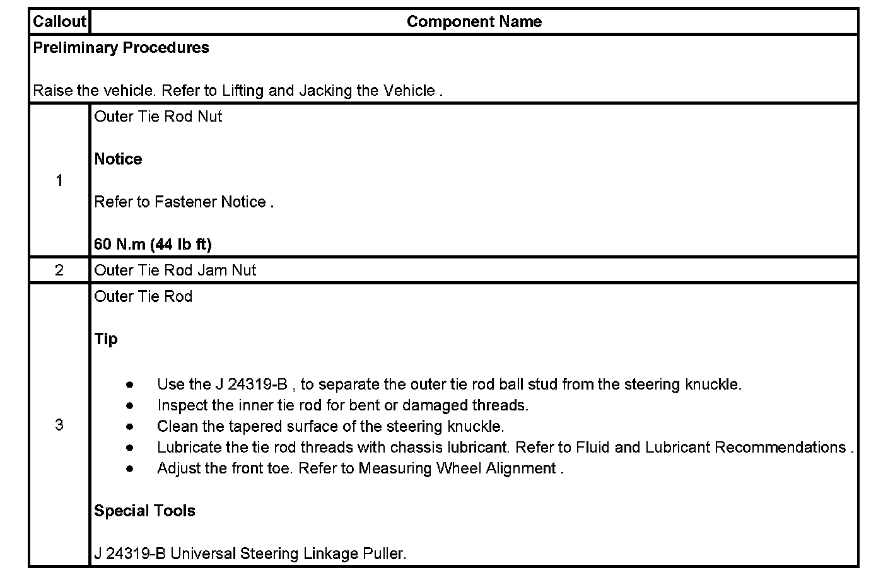

Operation CHARM
: Car repair manuals for everyone.
Home
>>
Cadillac
>>
2007
>>
Escalade ESV AWD V8-6.2L
>>
Repair and Diagnosis
>>
Steering and Suspension
>>
Steering
>>
Tie Rod
>>
Service and Repair
>>
Steering Linkage (Non-Rack & Pinion)
>>
Steering Linkage Outer Tie Rod Replacement
Steering Linkage Outer Tie Rod Replacement
Steering
Linkage Outer
Tie Rod
Replacement

